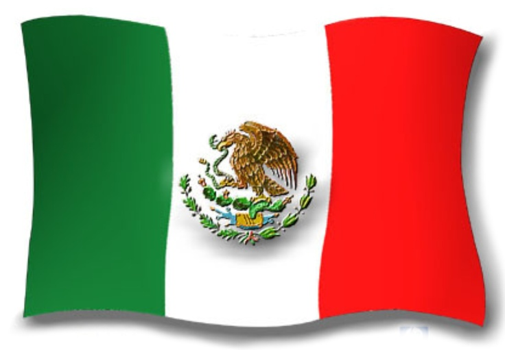

My name is Alma Fernanda García Monterrubio. I was born in Pachuca, Hidalgo, Mexico. I live with my parents and my grandmother, and I love spending time with them. I'm single, but I would like to get married and have a big family.
Mexico, officially the United Mexican States, is located in North America, bordered by the United States, Guatemala, Belize, and the Pacific Ocean. With a population of around 128 million, it is a federal republic with Mexico City as its capital. Spanish is the official language, and the currency is the Mexican Peso. Known for its rich culture, Mexico is famous for landmarks like Chichen Itza, beautiful beaches, and a vibrant food scene, including tacos and guacamole. It has a diverse climate and economy, being a leading producer of silver, oil, and automobiles. Mexico’s Independence Day is celebrated on September 16th.
